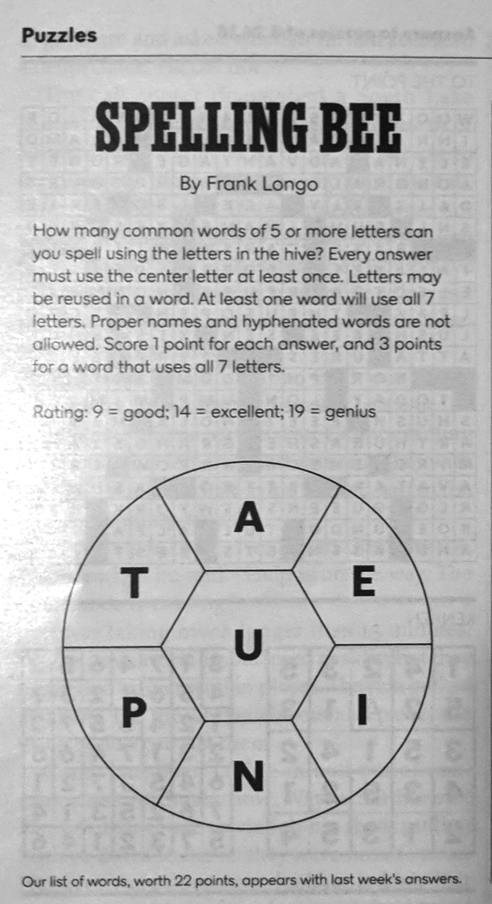

class: middle # Text Analysis Methods Workshop 3: Python Fundamentals continued (and another Example Script) ### <hr> Matthew J. Lavin Clinical Assistant Professor of English and Director of Digital Media Lab University of Pittsburgh Fall 2018 --- class: middle ### Open a Jupyter Notebook <hr> #### To pick up where we left off, launch a Jupyter Notebook using Anaconda Navigator, as we did last week and the week before. Click "New" and then "Python 3" to load a new notebook. --- class: middle ### Let's review <hr> #### Last week we talked about Python's basic variable types: strings, integers, and floats. We also discussed lists, tuples, and dictionaries. See if you can remember the following: - #### which type will Python recognize as text? - #### which numeric type has decimals? - #### which type is whole numbers only? - #### which type would we use if we need to keep things in order but add or remove items as we go? - #### how about a faster-access, immutable collection of ordered items? - #### which type allows us to look up a "value" very quickly by providing a "key" ? --- class: middle ### Let's review a little more <hr> #### If you type the following into Python and run it, you'll get an error. <div class="hlcode"> <div class="syntax"><pre><span></span><span class="k">for</span> <span class="n">i</span> <span class="ow">in</span> <span class="nb">range</span><span class="p">(</span><span class="mf">10.0</span><span class="p">):</span> <span class="nb">print</span><span class="p">(</span><span class="n">i</span><span class="p">)</span> </pre></div> </div> #### Why? --- class: middle ### Loops <hr> #### This brings us to loops and functions. Loops are Python's way of <em>iterating</em> through a collection of items and doing the same thing to all of them. All programming languages have some way of iterating, but Python makes it very easy. The basic syntax looks like this: <div class="hlcode"> <div class="syntax"><pre><span></span><span class="n">mylist</span> <span class="o">=</span> <span class="p">[</span><span class="mi">1</span><span class="p">,</span><span class="mi">4</span><span class="p">,</span><span class="mi">6</span><span class="p">,</span><span class="mi">2</span><span class="p">,</span><span class="mi">5</span><span class="p">,</span><span class="mi">3</span><span class="p">,</span><span class="mi">7</span><span class="p">,</span><span class="mi">9</span><span class="p">]</span> <span class="k">for</span> <span class="n">i</span> <span class="ow">in</span> <span class="n">mylist</span><span class="p">:</span> <span class="nb">print</span><span class="p">(</span><span class="n">i</span><span class="p">)</span> </pre></div> </div> #### Copy paste this code into your Jupyter Notebook and run it. Don't forget to put four spaes or a tab in front of the second line! --- class: middle ### Loops continued <hr> #### With this basic loop, you are telling Python to go through each item in the mylist and print it. The required syntax is: <div class="hlcode"> <div class="syntax"><pre><span class="k">for</span> <span class="n">[blank]</span> <span class="ow">in</span> <span class="n">[blank]</span><span class="p">:</span></pre></div></div> The "i" part of the line just sets an arbitrary variable name for the iterated item, and "mylist" is the name of the thing you want to loop over. <hr> #### There's so much more to say about loops! The data you loop over can get quite complex, and so can the operations you perform. To understand all this, however, you need to be at least partially familiar with two other ideas: conditionals functions. --- class: middle ### Conditionals <hr> #### Conditionals are a way to perform an action if some condition is True of False. The basic syntax uses if, elif, and else. Try out this code: <div class="hlcode"> <div class="syntax"><pre><span></span><span class="n">mylist</span> <span class="o">=</span> <span class="p">[</span><span class="mi">1</span><span class="p">,</span><span class="mi">4</span><span class="p">,</span><span class="mi">6</span><span class="p">,</span><span class="mi">2</span><span class="p">,</span><span class="mi">5</span><span class="p">,</span><span class="mi">3</span><span class="p">,</span><span class="mi">7</span><span class="p">,</span><span class="mi">9</span><span class="p">]</span> <span class="k">for</span> <span class="n">k</span> <span class="ow">in</span> <span class="n">mylist</span><span class="p">:</span> <span class="k">if</span> <span class="n">k</span> <span class="o">></span> <span class="mi">3</span><span class="p">:</span> <span class="nb">print</span><span class="p">(</span><span class="n">k</span><span class="p">)</span> </pre></div> </div> #### Notice that the line with our print() function is now eight spaces or two tabs from the left. This is part of the syntax for conditionals. Notice, as well, that I used the > symbol in my statement. This is one of several comparison operators. <hr> In Python, you can evaluate if a variable is equal to (==), not equal to (!=), greater than (>), or less than (<). You can also mix and match these operators, such as greater-than or equal-to (>=) and less-than or equal-to (<=), or not less-than or equal-to (!<=). --- class: middle ### Conditionals continued <hr> #### You can even combine two conditions in one statement. Try this example: <div class="hlcode"> <div class="syntax"><pre><span></span><span class="n">mylist</span> <span class="o">=</span> <span class="p">[</span><span class="mi">1</span><span class="p">,</span><span class="mi">4</span><span class="p">,</span><span class="mi">6</span><span class="p">,</span><span class="mi">2</span><span class="p">,</span><span class="mi">5</span><span class="p">,</span><span class="mi">3</span><span class="p">,</span><span class="mi">7</span><span class="p">,</span><span class="mi">9</span><span class="p">]</span> <span class="k">for</span> <span class="n">k</span> <span class="ow">in</span> <span class="n">mylist</span><span class="p">:</span> <span class="k">if</span> <span class="n">k</span> <span class="o">></span> <span class="mi">3</span> <span class="ow">and</span> <span class="n">k</span> <span class="o">%</span> <span class="mi">3</span> <span class="o">!=</span> <span class="mi">0</span><span class="p">:</span> <span class="nb">print</span><span class="p">(</span><span class="n">k</span><span class="p">)</span> </pre></div> </div> #### In this case, we used a special operator called a modulo (%) to test if the variable divided evenly into 3, without a remainder, so the program printed only numbers greater than 3 that also aren't evenly dvisible by 3. --- class: middle ### Functions <hr> #### Functions allow us to represent a series of operations as one line of code. Here's a very simple function: <div class="hlcode"> <div class="syntax"><pre><span></span><span class="n">mylist</span> <span class="o">=</span> <span class="p">[</span><span class="mi">1</span><span class="p">,</span><span class="mi">4</span><span class="p">,</span><span class="mi">6</span><span class="p">,</span><span class="mi">2</span><span class="p">,</span><span class="mi">5</span><span class="p">,</span><span class="mi">3</span><span class="p">,</span><span class="mi">7</span><span class="p">,</span><span class="mi">9</span><span class="p">]</span> <span class="k">def</span> <span class="nf">is_odd</span><span class="p">(</span><span class="n">number</span><span class="p">):</span> <span class="k">if</span> <span class="n">number</span> <span class="o">%</span> <span class="mi">2</span> <span class="o">==</span> <span class="mi">0</span><span class="p">:</span> <span class="k">return</span> <span class="kc">True</span> <span class="k">else</span><span class="p">:</span> <span class="k">return</span> <span class="kc">False</span> <span class="k">for</span> <span class="n">k</span> <span class="ow">in</span> <span class="n">mylist</span><span class="p">:</span> <span class="nb">print</span><span class="p">(</span><span class="n">is_odd</span><span class="p">(</span><span class="n">k</span><span class="p">))</span> </pre></div> </div> #### In this example, I first define what my function does. It accepts a parameter (number) and check to see if it's odd or even. Later, I call my function and supply it with a variable to represent the number parameter. If I don't supply a variable, I'll get an error. (If I supply two variables, it will also error.) --- class: middle ### Putting Things Together <hr> #### Or we could have a function called "clean_text" that accepts a block of text as input and does all kinds of things to clean up that text like removing misspelled words or taking out extra spaces. The function performs all of the operations and gives us back a cleaned text as output. I'll say more about functions as we go, but this is the core syntax: <pre>def function_name(param): some operation return statement</pre> #### Later, I call the function like this: <pre>function_name(variable) --- class: middle ### Putting Things Together <hr> #### Believe or not, you now have the basic building blocks of Python. Almost everything I've covered can get more complicated, but you can do a lot with just this basic toolbox. <hr> #### You'll use a function to, say, load a text file into Python, and then you'll loop through each word in the file. You might then use a conditional to see if the word starts with a vowel, and then store the matching words for some later use. Or perhaps you are looking for sentiment terms, or common first names. A great deal of text analysis is done just like this. --- class: middle ### Another Example <hr> #### Let's try another example script. It's a dictionary-based approach to solving the <em>New York Times</em> "Spelling Bee" puzzle. <hr> #### Before we get into the code, let's take a look at an example of the "Spelling Bee." --- class: middle  #### Here's the "Spelling Bee" from two weekends ago. Take 5-7 minutes and see how many words yoiu can come up with. Remember, words have to be five or more letters long, they have to use the center letter, and they can repeat letters as often as you like --- class: middle ### Fork the Repository <hr> #### Go to <a href="https://github.com/dh-fall-2018/spelling-bee">https://github.com/dh-fall-2018/spelling-bee</a> and click the "Fork" button in the upper right-hand corner. A window will pop up asking "Where should we fork this repository?" Choose your account. <hr> #### REMINDER: Forking a repo copies it to your Github account, which will give you permission to edit your version of that repo. --- class: middle ### Clone the repo <hr> #### Once the repo is forked to your account, you have download a copy to your computer. To do this, open Github Desktop, click "clone a repository", and find the repiository called <yourusername>/spelling-bee in the list of repos you can clone. Click the "clone" button, and the program will copy the repo to a folder located at Documents/GitHub/spelling-bee. --- class: middle ### Run the Jupyter Notebook from the Repo Folder and Look at the Output <hr> - #### What is the result? - #### How does the script work?